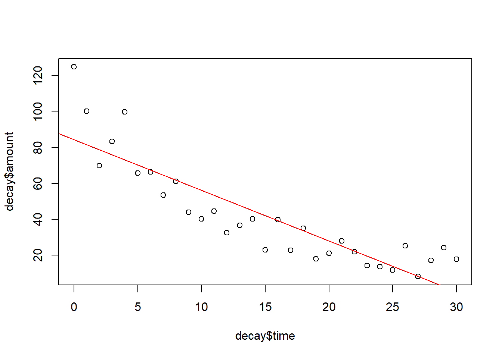
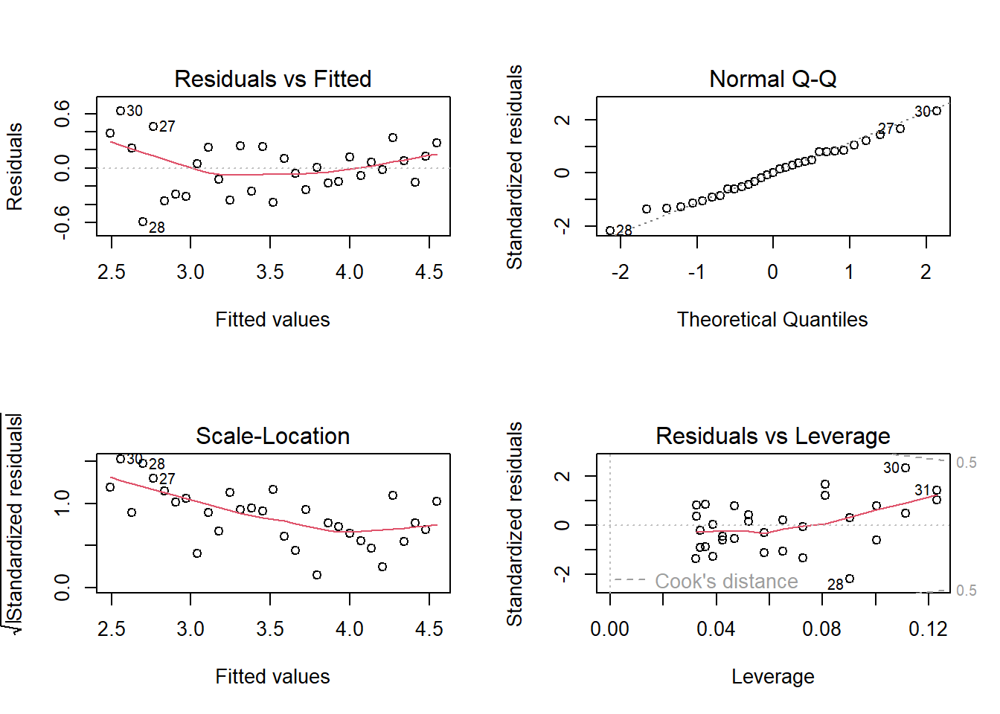
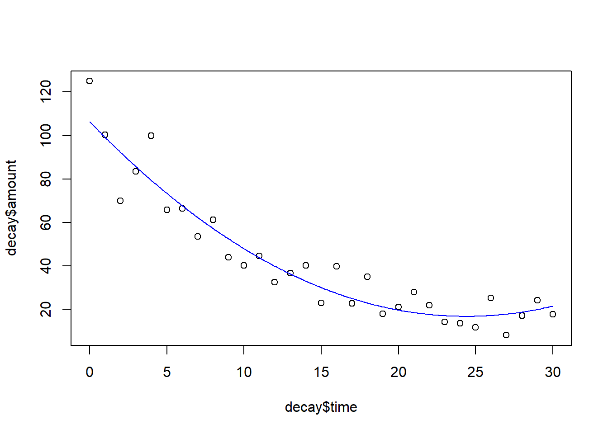

Stat2: Lösung Beispiel
Musterlösung Beispiel
- Datensatz decay.csv
- RCode als Download
- Lösungstext Beispiel
Übungsaufgabe
(hier so ausführlich formuliert, wie dies auch in der Klausur der Fall sein wird)
- Laden Sie den Datensatz decay.csv. Dieser enthält die Zahl radioaktiver Zerfälle pro Zeiteinheit (amount) für Zeitpunkte (time) nach dem Start des Experimentes.
- Ermitteln Sie ein statistisches Modell, dass die Zerfallshäufigkeit in Abhängigkeit von der Zeit beschreibt.
- Bitte erklären und begründen Sie die einzelnen Schritte, die Sie unternehmen, um zu diesem Ergebnis zu kommen. Dazu erstellen Sie bitte ein Word-Dokument, in das Sie Schritt für Schritt den verwendeten R-Code, die dazu gehörigen Ausgaben von R, Ihre Interpretation derselben und die sich ergebenden Schlussfolgerungen für das weitere Vorgehen dokumentieren.
- Dieser Ablauf sollte insbesondere beinhalten:
- Überprüfen der Datenstruktur nach dem Einlesen, welches sind die abhängige(n) und welches die unabängige(n) Variablen
- Explorative Datenanalyse, um zu sehen, ob evtl. Dateneingabefehler vorliegen oder Datentransformationen vorgenommen werden sollten
- Auswahl und Begründung eines statistischen Verfahrens (es gibt hier mehrere statistisch korrekte Möglichkeiten!)
- Ermittlung eines Modells
- Durchführen der Modelldiagnostik für das gewählte Modell
- Generieren aller Zahlen, Statistiken und Tabellen, die für eine wiss. Ergebnisdarstellung benötigt werden
- Formulieren Sie abschliessend einen Methoden- und Ergebnisteil (ggf. incl. adäquaten Abbildungen) zu dieser Untersuchung in der Form einer wissenschaftlichen Arbeit (ausformulierte schriftliche Zusammenfassung, mit je einem Absatz von ca. 60-100 Worten, resp. 3-8 Sätzen für den Methoden- und Ergebnisteil). D. h. alle wichtigen Informationen sollten enthalten sein, unnötige Redundanz dagegen vermieden werden.
- Abzugeben sind am Ende (a) Ein lauffähiges R-Skript; (b) begründeter Lösungsweg (Kombination aus R-Code, R Output und dessen Interpretation) und (c) ausformulierter Methoden- und Ergebnisteil (für eine wiss. Arbeit).
Kommentierter Lösungsweg
summary(decay) time amount
Min. : 0.0 Min. : 8.196
1st Qu.: 7.5 1st Qu.: 21.522
Median :15.0 Median : 35.015
Mean :15.0 Mean : 42.146
3rd Qu.:22.5 3rd Qu.: 57.460
Max. :30.0 Max. :125.000 str(decay)'data.frame': 31 obs. of 2 variables:
$ time : int 0 1 2 3 4 5 6 7 8 9 ...
$ amount: num 125 100.2 70 83.5 100 ...Man erkennt, dass es 31 Beobachtungen für die Zeit als Integer von Zerfällen gibt, die als rationale Zahlen angegeben werden (dass die Zahl der Zerfälle nicht ganzzahlig ist, deutet darauf hin, dass sie möglicherweise nur in einem Teil des Zeitintervalls oder für einen Teil des betrachteten Raumes gemessen und dann hochgerechnet wurde.
Explorative Datenanalyse
boxplot(decay$time)
boxplot(decay$amount)
plot(amount~time, data=decay)Während der Boxplot für time wunderbar symmetrisch ohne Ausreisser ist, zeigt amount eine stark rechtsschiefe (linkssteile) Verteilung mit einem Ausreiser. Das deutet schon an, dass ein einfaches lineares Modell vermutlich die Modellannahmen verletzen wird. Auch der einfache Scatterplot zeigt, dass ein lineares Modell wohl nicht adäquat ist. Wir rechnen aber erst einmal weiter.
Einfaches lineares Modell
lm.1 <- lm(amount~time, data = decay)
summary(lm.1)
Call:
lm(formula = amount ~ time, data = decay)
Residuals:
Min 1Q Median 3Q Max
-19.065 -10.029 -2.058 5.107 40.447
Coefficients:
Estimate Std. Error t value Pr(>|t|)
(Intercept) 84.5534 5.0277 16.82 < 2e-16 ***
time -2.8272 0.2879 -9.82 9.94e-11 ***
---
Signif. codes: 0 '***' 0.001 '**' 0.01 '*' 0.05 '.' 0.1 ' ' 1
Residual standard error: 14.34 on 29 degrees of freedom
Multiple R-squared: 0.7688, Adjusted R-squared: 0.7608
F-statistic: 96.44 on 1 and 29 DF, p-value: 9.939e-11Das sieht erst einmal nach einem Supermodell aus, höchstsignifikant und mit einem hohen R² von fast 77%. ABER: wir müssen uns noch die Modelldiagnostik ansehen…
Modelldiagnostik
par(mfrow = c(2, 2))
plot(lm.1)Hier zeigen die wichtigen oberen Plots beide massive Abweichungen vom „Soll“. Der Plot oben links zeigt eine „Banane“ und beim Q-Q-Plot oben rechts weichen die Punkte rechts der Mitte alle stark nach oben von der Solllinie ab. Wir haben unser Modell also offensichtlich falsch spezifiziert. Um eine Idee zu bekommen, was falsch ist, plotten wir noch, wie das Ergebnis dieses Modells aussähe:
Ergebnisplot
par(mfrow = c(1, 1))
plot(decay$time, decay$amount)
abline(lm.1, col = "red")
Die Punkte links liegen alle über der Regressionslinie, die in der Mitte darunter und die ganz rechts wieder systematisch darüber (darum im Diagnostikplot oben die „Banane“). Es liegt also offensichtlich keine lineare Beziehung vor, sondern eine curvilineare.
Um diese korrekt zu analysieren, gibt es im Prinzip drei Möglichkeiten, wovon am zweiten Kurstag nur eine hatten, während die zweite und dritte in Statistik 3 und 4 folgten. Im Folgenden sind alle drei nacheinander dargestellt (in der Klausur würde es aber genügen, eine davon darzustellen, wenn die Aufgabenstellung wie oben lautet).
Variante (1): Lineares Modell nach Transformation der abhängigen Variablen
Dass die Verteilung der abhängigen Variable nicht normal ist, haben wir ja schon bei der explorativen Datenanalyse am Anfang gesehen. Da sie stark linkssteil ist, zugleich aber keine Nullwerte enthält, bietet sich eine Logarithmustransformation an, hier z. B. mit dem natürlichen Logarithmus.
Lösung 1: log-Transformation der abängigen Variablen
par(mfrow = c(1, 2))
boxplot(decay$amount)
boxplot(log(decay$amount))
hist(decay$amount)
hist(log(decay$amount))

Die log-transformierte Variante rechts sieht sowohl im Boxplot als auch im #Histogramm viel symmetrischer/besser normalverteilt aus. Damit ergibt sich #dann folgendes lineares Modell
lm.2 <- lm(log(amount)~time, data = decay)
summary(lm.2)
Call:
lm(formula = log(amount) ~ time, data = decay)
Residuals:
Min 1Q Median 3Q Max
-0.5935 -0.2043 0.0067 0.2198 0.6297
Coefficients:
Estimate Std. Error t value Pr(>|t|)
(Intercept) 4.547386 0.100295 45.34 < 2e-16 ***
time -0.068528 0.005743 -11.93 1.04e-12 ***
---
Signif. codes: 0 '***' 0.001 '**' 0.01 '*' 0.05 '.' 0.1 ' ' 1
Residual standard error: 0.286 on 29 degrees of freedom
Multiple R-squared: 0.8308, Adjusted R-squared: 0.825
F-statistic: 142.4 on 1 and 29 DF, p-value: 1.038e-12Jetzt ist der R²-Wert noch höher und der p-Wert noch niedriger als im ursprünglichen linearen Modell ohne Transformation. Das erlaubt aber keine Aussage, da wir Äpfel mit Birnen vergleichen, da die abhängige Variable einmal untransformiert und einmal log-transformiert ist. Entscheidend ist die Modelldiagnostik.
Modelldiagnostik
par(mfrow = c(2, 2))
plot(lm.2)
Der Q-Q-Plot sieht jetzt exzellent aus, der Plot rechts oben hat kaum noch eine Banane, nur noch einen leichten Keil. Insgesamt deutlich besser und auf jeden Fall ein statistisch korrektes Modell.
Lösungen 2 und 3 greifen auf Methoden von Statistik 3 und 4 zurück, sie sind hier nur zum Vergleich angeführt
Lösung 2: quadratische Regression (kommt erst in Statistik 3)
könnte für die Datenverteilung passen, entspricht aber nicht der physikalischen
Gesetzmässigkeit
model.quad <- lm(amount~time + I(time^2), data= decay)
summary(model.quad)
Call:
lm(formula = amount ~ time + I(time^2), data = decay)
Residuals:
Min 1Q Median 3Q Max
-22.302 -6.044 -1.603 4.224 20.581
Coefficients:
Estimate Std. Error t value Pr(>|t|)
(Intercept) 106.38880 4.65627 22.849 < 2e-16 ***
time -7.34485 0.71844 -10.223 5.90e-11 ***
I(time^2) 0.15059 0.02314 6.507 4.73e-07 ***
---
Signif. codes: 0 '***' 0.001 '**' 0.01 '*' 0.05 '.' 0.1 ' ' 1
Residual standard error: 9.205 on 28 degrees of freedom
Multiple R-squared: 0.908, Adjusted R-squared: 0.9014
F-statistic: 138.1 on 2 and 28 DF, p-value: 3.122e-15Hier können wir R² mit dem ursprünglichen Modell vergleichen (beide haben amount als abhängige Grösse) und es sieht viel besser aus. Sowohl der lineare als auch der quadratische Term sind hochsignifikant. Sicherheitshalber vergleichen wir die beiden Modelle aber noch mittels ANOVA.
Vergleich mit dem einfachen Modell mittels ANOVA (es ginge auch AICc)
anova(lm.1, model.quad)Analysis of Variance Table
Model 1: amount ~ time
Model 2: amount ~ time + I(time^2)
Res.Df RSS Df Sum of Sq F Pr(>F)
1 29 5960.6
2 28 2372.6 1 3588.1 42.344 4.727e-07 ***
---
Signif. codes: 0 '***' 0.001 '**' 0.01 '*' 0.05 '.' 0.1 ' ' 1In der Tat ist das komplexere Modell (jenes mit dem quadratischen Term) höchstsignifikant besser. Jetzt brauchen wir noch die Modelldiagnostik.
Modelldiagnostik
par(mfrow = c(2, 2))
plot(model.quad)
Lösung 3 (die beste, hatten wir aber am 2. Tag noch nicht; mit Startwerten muss man ggf. ausprobieren)
mit Startwerten muss man ggf. ausprobieren
model.nls <- nls(amount~a*exp(-b*time), start=(list(a = 100, b = 1)),data = decay)
summary(model.nls)
Formula: amount ~ a * exp(-b * time)
Parameters:
Estimate Std. Error t value Pr(>|t|)
a 1.081e+02 4.993e+00 21.66 < 2e-16 ***
b 8.019e-02 5.833e-03 13.75 3.12e-14 ***
---
Signif. codes: 0 '***' 0.001 '**' 0.01 '*' 0.05 '.' 0.1 ' ' 1
Residual standard error: 9.243 on 29 degrees of freedom
Number of iterations to convergence: 8
Achieved convergence tolerance: 7.966e-06Modelldiagnostik
if(!require(nlstools)){install.packages("nlstools")}
library(nlstools)
residuals.nls <- nlsResiduals(model.nls)
plot(residuals.nls)
Für nls kann man nicht den normalen Plotbefehl für die Residualdiagnostik nehmen, sondern verwendet das Äquivalent aus nlstools. Die beiden entscheidenden Plots sind jetzt links oben und rechts unten. Der QQ-Plot hat im unteren Bereich einen kleinen Schönheitsfehler, aber ansonsten ist alles OK.
Da alle drei Lösungen zumindest statistisch OK waren, sollen jetzt noch die zugehörigen Ergebnisplots erstellt werden.
Ergebnisplots
par(mfrow = c(1, 1))
xv <- seq(0, 30, 0.1)- lineares Modell mit log-transformierter Abhängiger
plot(decay$time, decay$amount)
yv1 <- exp(predict(lm.2, list(time = xv)))
lines(xv, yv1, col = "red")
- quadratisches Modell
plot(decay$time, decay$amount)
yv2 <- predict(model.quad, list(time = xv))
lines(xv, yv2, col= "blue")
- nicht-lineares Modell
plot(decay$time, decay$amount)
yv3 <- predict(model.nls, list(time = xv))
lines(xv, yv3, col = "green")
Optisch betrachtet, geben (2) und (3) den empirischen Zusammenhang etwas besser wieder als (1), da sie im linken Bereich die hohen Werte besser treffen. Man könnte sogar meinen, bei Betrachtung der Daten, dass die Werte ab time = 28 wieder leicht ansteigen, was die quadratische Funktion wiedergibt. Wer sich aber mit Physik etwas auskennt, weiss, dass Version (2) physikalisch nicht zutrifft, da die Zerfallsrate mit der Zeit immer weiter abfällt. Aufgrund der kurzen Messreihe wäre eine quadratische Funktion trotzdem eine statistisch korrekte Interpretation. Mit längeren Messreihen würde sich jedoch schnell zeigen, dass sie nicht zutrifft.